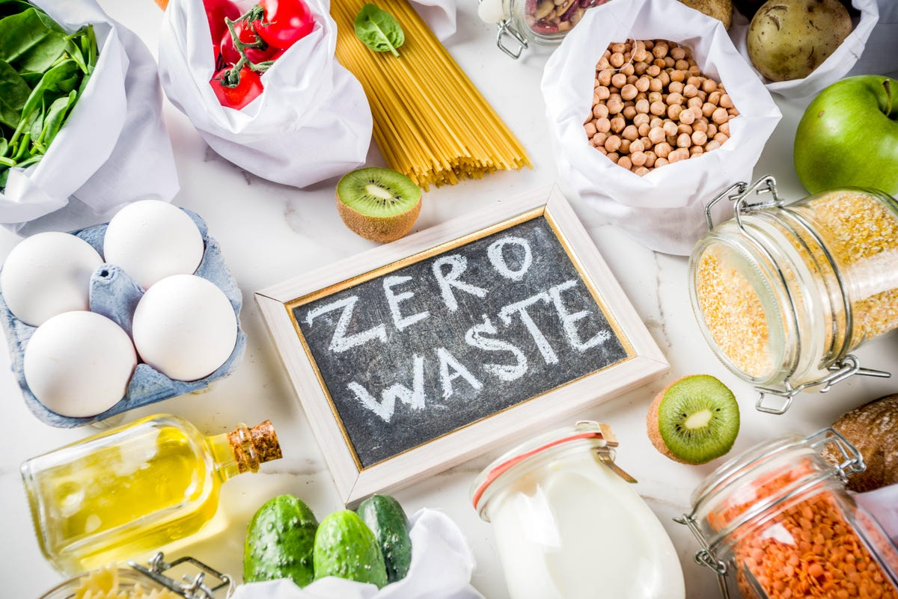
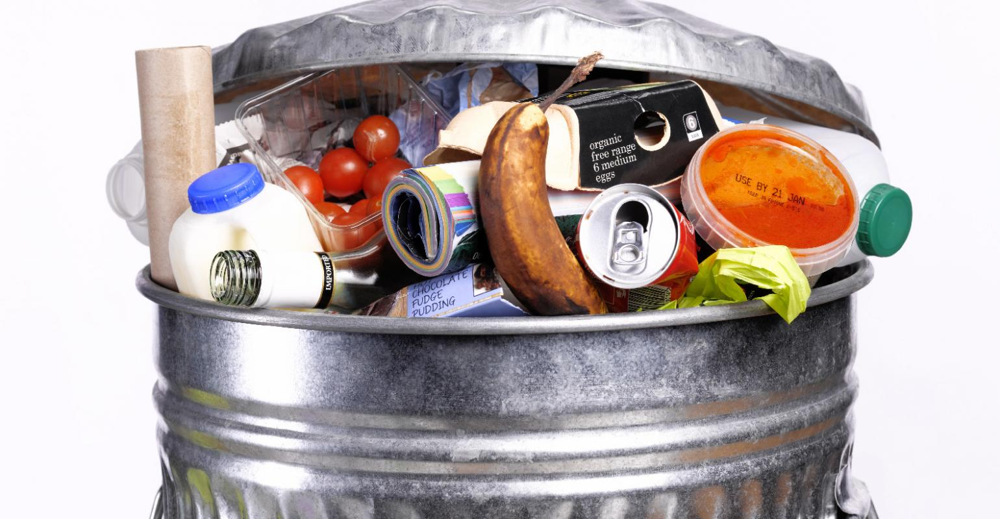
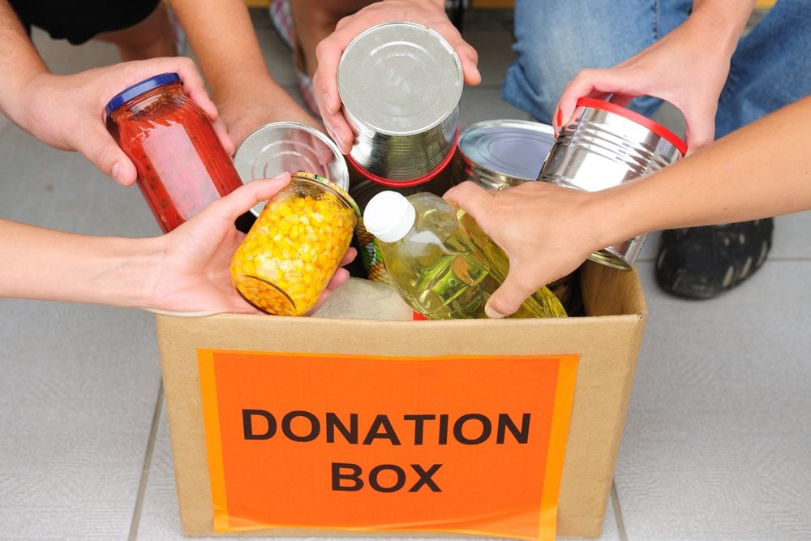
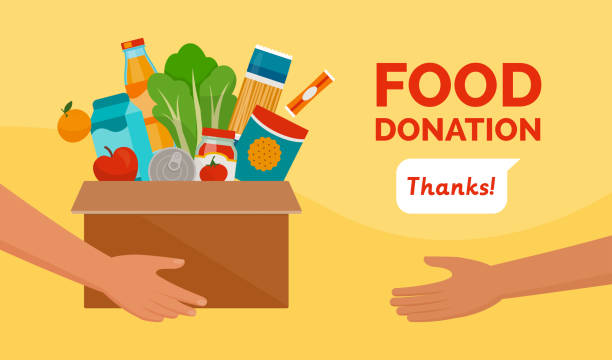
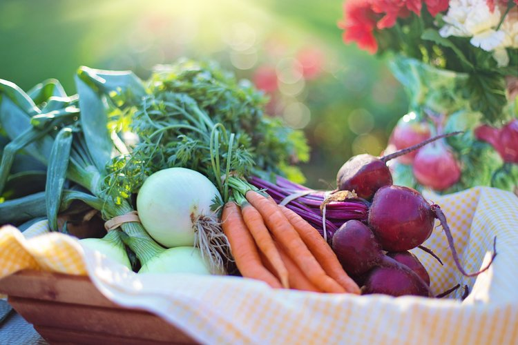

Welcome to Our Website
 We are a non-profit organization dedicated to reducing food wastage and fighting hunger in our community. we are here to discuss some important term about food wastage it is very much risky thing to waste a food because as the world is suffering now no one will be able to have a single time meal. The poor children who are not able to have a single meal it is our job to feed them them because its a part of humanity Wasted food has far-reaching effects, both nationally and globally. In the U.S., up to 40% of all food produced goes uneaten , and about 95% of discarded food ends up in landfills . It is the largest component of municipal solid waste at 21%. In 2014, more than 38 million tons of food waste was generated, with only 5% diverted from landfills and incinerators for composting. It is estimated that reducing food waste by 15% could feed more than 25 million Americans every year.
Learn MoreOur Mission
 Our mission is to collect excess food from restaurants, grocery stores, and other sources and distribute it to people in need.
The vision of FOR Solutions, some may identify it as our just cause, is one where hunger no longer exists. A world where equitable, fair, just, and sustainable food systems exist because all communities have access to soil that is rich and fertile because it is sustained by the continuous replacement of vital nutrients derived from uneaten food that has been composted. It is a vision where food is grown locally, distributed locally, eaten locally, and recycled by composting locally; where all food that came from the Earth is returned to the Earth if it is not eaten - a closed cycle where there is no beginning and, more important, no end.
Donate NowWe Believe
a rind is a terrible thing to waste. that food is not waste until it is wasted. there is a viable solution that is both an economically and environmentally friendly way to create sustainable food systems. that no person should have to worry about her/his next meal. that healthy soil is humanity’s most precious natural resource. in challenging conventional thinking about how to manage uneaten food and how to revitalize soils.
Donate Now